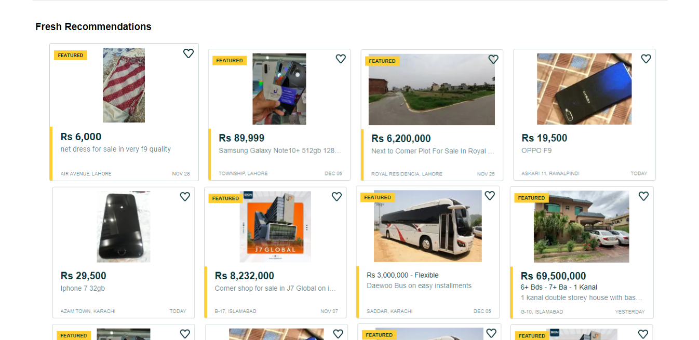
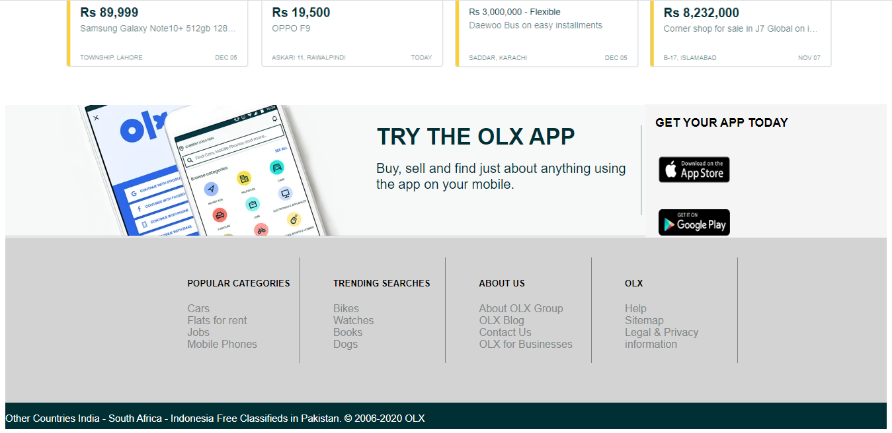
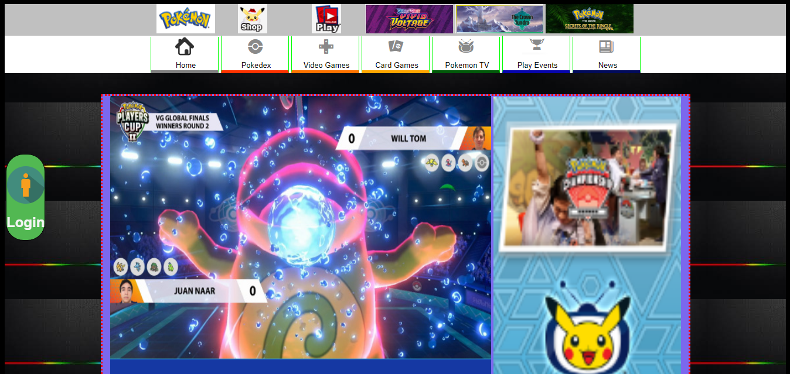
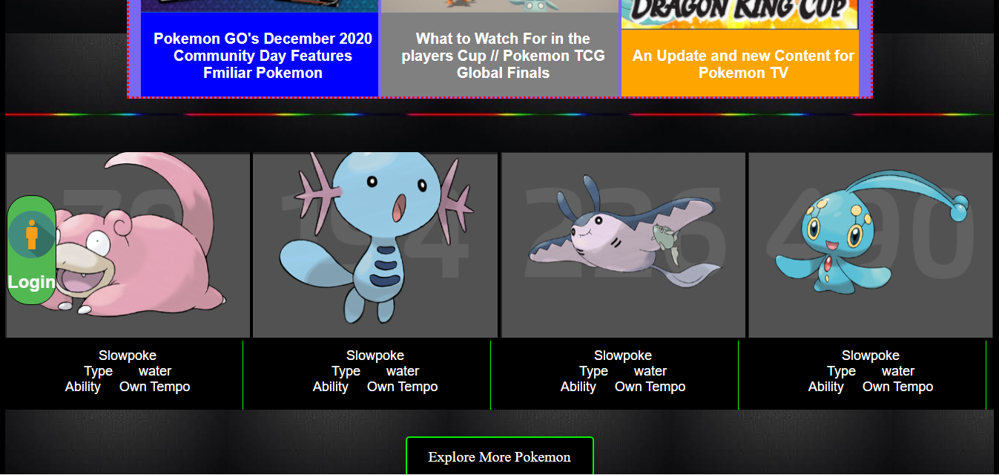
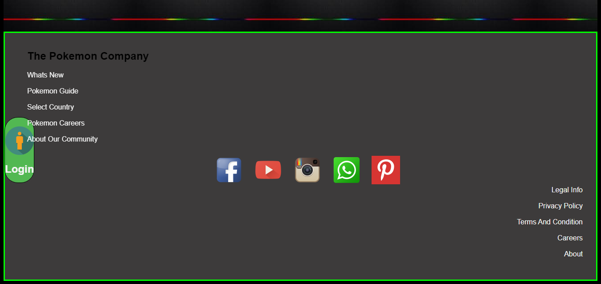
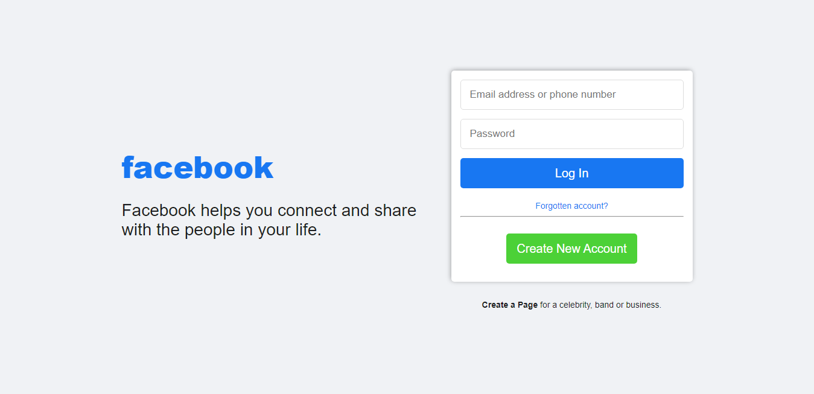
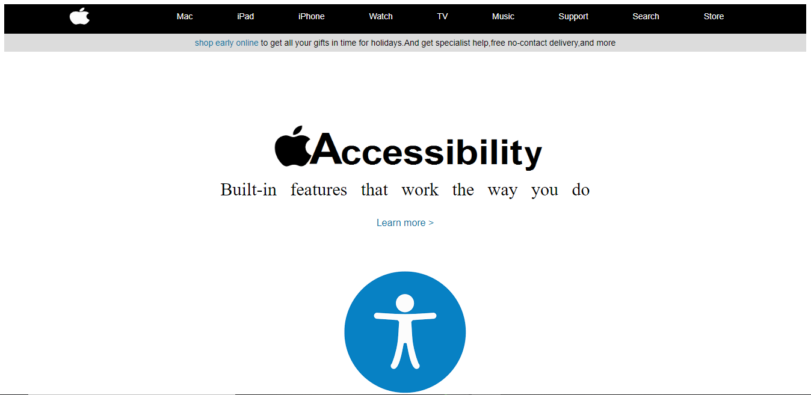
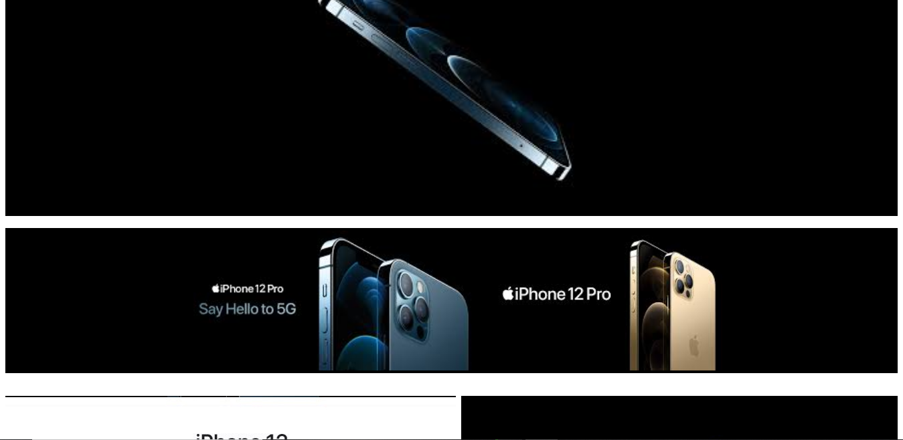
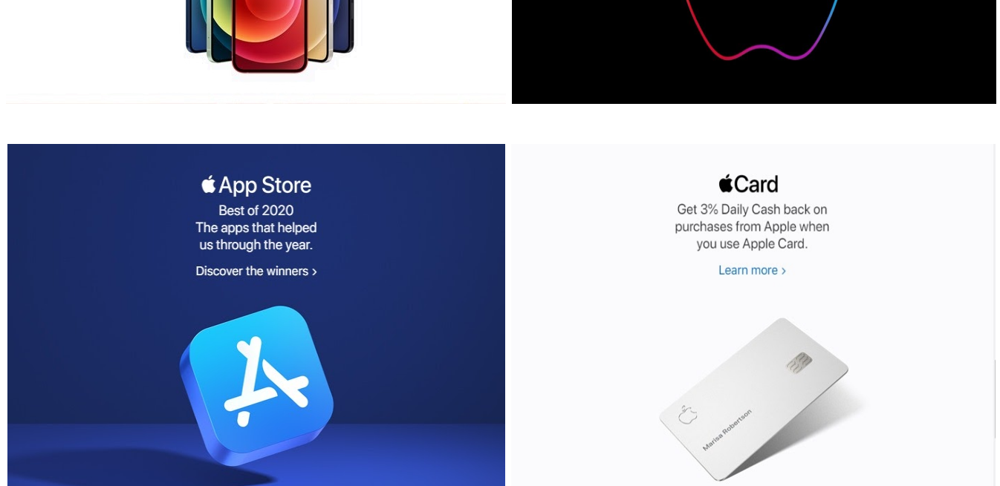

OnLine eXchange also known as OLX Group is a Dutch-domiciled online marketplace headquartered in Amsterdam, and owned by Prosus, the international assets division of Naspers, founded in 2006 and operating in 45 countries. The OLX marketplace is a platform for buying and selling services and goods such as electronics, fashion items, furniture, household goods, cars and bikes. In 2014, the platform reportedly had 11 billion page views, 200 million monthly active users, 25 million listings, and 8.5 million transactions per month. South African media group Naspers acquired a majority of OLX in 2010 and 95% of the company in 2014.
In Pakistan, OLX receives nearly 30 million views per month. In India, about 99% of its listings come from used mobile and electronics, used home and household goods, and used cars & bikes.OLX's operations in India, like other online retailers, has faced problems with fraud and with people selling stolen vehicles, something they have made efforts to address; nearly 25% of the car listings on their site get rejected. In Brazil, OLX and bomnegocio.com, owned by Norway's Schibsted, combined in 2014 to create a classifieds site. In Kenya in 2016, farmers have reportedly used OLX to sell their produce and livestock, especially chicken and cattle.
CLICK HERE TO VIEWOver the years, OLX has become a common place for fraud, especially sellers who post fake advertisements to dupe buyers upon receiving advance payment, and fraudulent buyers who engage in UPI scam, phishing, and sending fake SMSes and emails of bank transfer confirmation. In 2018, OLX claimed that it rejects nearly 25% of the advertisements at the initial stage; the company also stated that it would work with law enforcement agencies to curb fraudulent activities on the platform. Despite these claims, advertisements to sell properties of public interest, such as the Statue of Unity and a former Indian Air Force fighter jet, have been posted on the site.
Pokémon, also known as Pocket Monsters in Japan, is a Japanese media franchise managed by The Pokémon Company, a company founded by Nintendo, Game Freak, and Creatures. The franchise was created by Satoshi Tajiri in 1995,and is centered on fictional creatures called "Pokémon", which humans, known as Pokémon Trainers, catch and train to battle each other for sport. Works within the franchise are set in the Pokémon universe. The English slogan for the franchise is "Gotta Catch 'Em All".
In November 2005, 4Kids Entertainment, which had managed the non-game related licensing of Pokémon, announced that it had agreed not to renew the Pokémon representation agreement. The Pokémon Company International oversees all Pokémon licensing outside Asia.In 2006, the franchise celebrated its tenth anniversary.
In 2016, the Pokémon Company celebrated Pokémon's 20th anniversary by airing an ad during Super Bowl 50 in January and re-releasing the first Pokémon video games 1996 Game Boy games Pokémon Red, Green (only in Japan), and Blue, and the 1998 Game Boy Color game Pokémon Yellow for the Nintendo 3DS on February 26, 2016.The mobile augmented reality game Pokémon Go was released in July 2016.The first live-action film in the franchise, Pokémon Detective Pikachu, based on the 2018 Nintendo 3DS spin-off game Detective Pikachu, was released in 2019.
CLICK HERE TO VIEWThe most recently released core series games, Pokémon Sword and Shield, were released worldwide on the Nintendo Switch on November 15, 2019.Pokémon will celebrate its 25th anniversary in 2021, teasing a very special celebration.
Facebook (stylized as facebook) is an American online social media and social networking service based in Menlo Park, California, and a flagship service of the namesake company Facebook, Inc. It was founded by Mark Zuckerberg, along with fellow Harvard College students and roommates Eduardo Saverin, Andrew McCollum, Dustin Moskovitz, and Chris Hughes.
CLICK HERE TO VIEWFacebook can be accessed from devices with Internet connectivity, such as personal computers, tablets and smartphones. After registering, users can create a profile revealing information about themselves. They can post text, photos and multimedia which is shared with any other users that have agreed to be their "friend", or, with a different privacy setting, with any reader. Users can also use various embedded apps, join common-interest groups, buy and sell items or services on Marketplace, and receive notifications of their Facebook friends' activities and activities of Facebook pages they follow. Facebook claimed that it had more than 2.3 billion monthly active users as of December 2018, and it was the most downloaded mobile app of the 2010s globally.
Apple Inc. is an American multinational technology company headquartered in Cupertino, California, that designs, develops and sells consumer electronics, computer software, and online services. It is considered one of the Big Five companies in the U.S. information technology industry, along with Amazon, Google, Microsoft, and Facebook.
The company's hardware products include the iPhone smartphone, the iPad tablet computer, the Mac personal computer, the iPod portable media player, the Apple Watch smartwatch, the Apple TV digital media player, the AirPods wireless earbuds and the HomePod smart speaker. Apple's software includes macOS, iOS, iPadOS, watchOS, and tvOS operating systems, the iTunes media player, the Safari web browser, the Shazam music identifier and the iLife and iWork creativity and productivity suites, as well as professional applications like Final Cut Pro, Logic Pro, and Xcode. Its online services include the iTunes Store, the iOS App Store, Mac App Store, Apple Arcade, Apple Music, Apple TV+, iMessage, and iCloud. Other services include Apple Store, Genius Bar, AppleCare, Apple Pay, Apple Pay Cash, and Apple Card.

Apple was founded by Steve Jobs, Steve Wozniak, and Ronald Wayne in April 1976 to develop and sell Wozniak's Apple I personal computer, though Wayne sold his share back within 12 days. It was incorporated as Apple Computer, Inc., in January 1977, and sales of its computers, including the Apple II, grew quickly. Within a few years, Jobs and Wozniak had hired a staff of computer designers and had a production line. Apple went public in 1980 to instant financial success. Over the next few years, Apple shipped new computers featuring innovative graphical user interfaces, such as the original Macintosh in 1984, and Apple's marketing advertisements for its products received widespread critical acclaim. However, the high price of its products and limited application library caused problems, as did power struggles between executives. In 1985, Wozniak departed Apple amicably and remained an honorary employee,while Jobs and others resigned to found NeXT.
Apple's worldwide annual revenue totaled $274.5 billion for the 2020 fiscal year. Apple is the world's largest technology company by revenue and one of the world's most valuable companies. It is also the world's third-largest mobile phone manufacturer after Samsung and Huawei. In August 2018, Apple became the first publicly traded U.S. company to be valued at over $1 trillion and just two years later in August 2020 became the first $2 trillion U.S. company. The company employs 137,000 full-time employees and maintains 510 retail stores in 25 countries as of 2020. It operates the iTunes Store, which is the world's largest music retailer. As of January 2020, more than 1.5 billion Apple products are actively in use worldwide.The company also has a high level of brand loyalty and is ranked as the world's most valuable brand. However, Apple receives significant criticism regarding the labor practices of its contractors, its environmental practices and unethical business practices, including anti-competitive behavior, as well as the origins of source materials.
CLICK HERE TO VIEWOn August 19, 2020, Apple's share price briefly topped $467.77, making Apple the first US company with a market capitalization of $2 trillion.